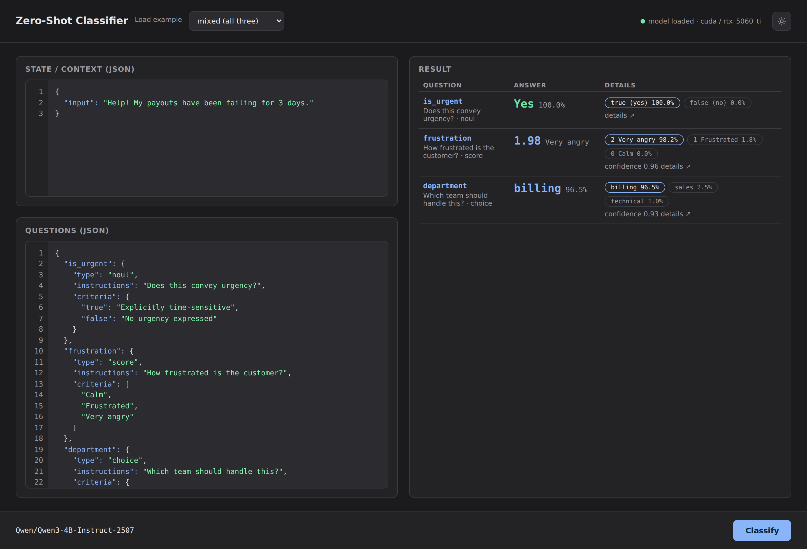
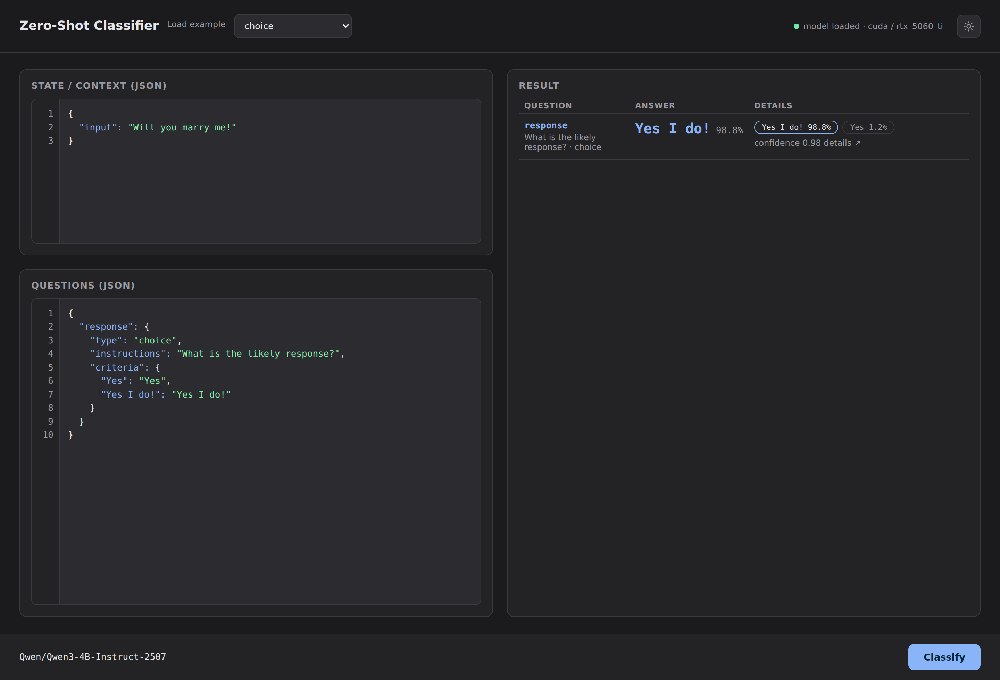
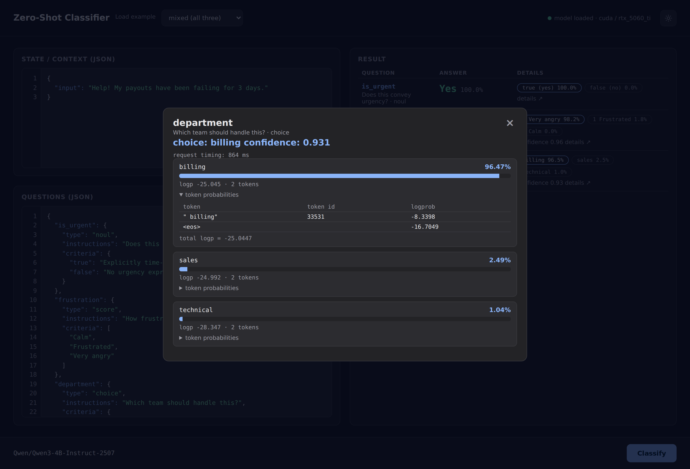

Notes from a rebuild
Recreating Jev from next-token probabilities
When I first came across Jev, the flagship model from Typesafe, I was intrigued. A model that takes an arbitrary state and a handful of choices, and returns a decision with a confidence score you're actually supposed to trust? My second thought was less generous: there's no way that works. The architecture isn't published, so I did the only sensible thing: tried to build it myself and see how far I'd get.

zero-shot-serve): a JSON editor for the
state and questions on the left, results on the right. This run mixed all three
question types in one call.
First instinct: rank by next-token probability
A language model is, at its core, a next-word probability machine. So the obvious approach is to hand it a prompt, look at the probability of each candidate answer as the next token(s), and rank them.
If the choices are billing, technical and sales, read the model's probability for each as the continuation, normalise, and you have a classifier. No training required. That should work.
A test that changed the approach
Before writing any code, I poked at the Jev playground with an obviously loaded example: a marriage proposal.
{
"response": {
"type": "choice",
"instructions": "What is the likely response?",
"criteria": {
"Yes": "Yes",
"Yes I do!": "Yes I do!"
}
}
}{
"input": "Will you marry me!"
}My gut said Yes I do!, which is how it's written in books and said in the movies. So I expected that one to come out on top.
But the probability maths said the opposite. Yes is a prefix of Yes I do!, so the longer answer is just the shorter one with another phrase stuck on:
P("Yes I do!") = P("Yes") × P(" I do!" | "Yes") ≤ P("Yes")
A pure product-of-token-probabilities ranker would therefore pick the short Yes. Yet the playground favoured the longer, complete answer.
That was the clue: the score wasn't just the probability of the tokens. It had to include the probability that the answer stops: the EOS token. Yes is an unfinished sentence, and the model keeps a lot of mass on continuing it, while Yes I do! is complete and likely to end. So the method became:
log P(option) = Σi log P(tokeni | prompt) + log P(EOS | prompt, option)
Score every option that way, then normalise across options. EOS is what makes "completeness" count.

Why the usual APIs can't do this
Getting the full next-token distribution is not something hosted providers expose:
- They return logprobs only for tokens the model generated, and only the top-k (often ≤ 20). That shows what the model chose, not the probability of an arbitrary candidate you want to score.
- Many disallow it on purpose (anti-distillation), and reasoning models often disable logprobs entirely.
- Even where logprobs exist, tokens outside the top-k have no exact value, and EOS is usually hidden precisely when the model actually stops.
I had Ollama locally, so I tried that next. Same wall: top_logprobs is capped at 20, and there's no EOS probability when it matters. So I dropped the API route and downloaded the model weights directly, running a forward pass with transformers to read the full-vocabulary logits.
Choosing a model
I tried a few, and learned that architecture matters more than parameter count here:
- Gemma 4 E2B: worked, but its text weights live under a different key prefix and it had KV-sharing quirks that made loading and scoring awkward.
- Qwen3.5 4B: hybrid linear attention; without special CUDA kernels it fell back to slow reference implementations.
- Qwen3-4B-Instruct-2507: a standard dense transformer. No kernel surprises, predictable latency, and much better at the task.
A note on speed. For the apple-colour example above, Jev reports ~113 ms of classification plus ~229 ms of network latency, so total round-trip is about 342 ms. The local server on an RTX 5060 Ti handles the same call in about 360 ms end-to-end: classification is roughly 3x slower than Jev's, and with the network round-trip added back in wall-clock is similar.
Trying it on a vision model
After living with this for a while I had a thought: a vision-language model does the same thing, it just accepts an image as part of the prompt. So why can't I use one here? The scoring path doesn't care where the context comes from — it just wants the logits over the option tokens. The image is prepended to the prompt through the model's chat template and everything downstream works unchanged.
I went ahead and tried it with Qwen3-VL-4B-Instruct, and — surprisingly — it worked as expected. The KV cache reuse carries over: the image + shared prompt is prefilled once, then each option continuation is scored against it. Calibration is text-only by design — the image is the content, so using it as its own null context would cancel the very signal being calibrated. The /v1/classify/image endpoint just takes a multipart upload alongside the usual JSON questions and runs the exact same scoring path as the text endpoint.
For machines without a usable GPU, the same idea works with SmolVLM-500M-Instruct at fp32 (~500M params, ~2 GB RAM). Quality on edge cases is lower than Qwen3-VL-4B — the criteria-order bias shows up more easily, and the winner can flip between orderings — but for short, direct classification prompts it fits in essentially any laptop. It uses the standard Idefics3 architecture, so there's no custom code or trust_remote_code to think about.
Making it fast: the KV cache
Scoring N options normally means N forward passes, each re-processing the identical prompt. That's wasteful: the context and task are the same, only the option continuation changes.
A transformer caches the attention keys and values of the tokens it has already processed. So we prefill the shared prompt once, keep that cache, and for each option only run the few new tokens against it. That's roughly 3-4× faster.
It isn't a free lunch: reusing the cache changes the shape of the attention math, so near-tie tokens can shift a little. On a 100-example run it didn't change a single top-1 prediction, and the exact path is always available if you turn it off.
Normalisation: removing the model's own preferences
Raw token likelihood has a bias problem. Some options are simply more likely strings: sales is a common token, 1 is a common digit. They win partly for the wrong reasons.
The fix is contextual calibration: score every option twice, once with the real context and once with a content-free context like "N/A", and subtract the second from the first.
score(option) = log P(option | context) − log P(option | "N/A")
{
"department": {
"type": "choice",
"instructions": "Which team should handle this?",
"criteria": {
"billing": "Payments, invoicing, refunds",
"technical": "Bugs, outages, integrations",
"sales": "Pricing, upgrades, new accounts"
}
}
}{
"input": "Help! My payouts have been failing for 3 days."
}Without calibration, sales wins this call simply because it is a more frequent token than billing or technical. The context points clearly at payments but the surface-form prior overrides it. Subtracting the content-free prior flips the answer to the one the context actually supports.
| option | uncalibrated | calibrated |
|---|---|---|
| billing | 48% | 96% |
| sales | 50% | 2% |
| technical | 2% | 1% |
Finally, a softmax (with an optional temperature) turns the scores into a clean distribution over options. It's worth separating two things that both get called "calibration": removing option bias (this), and making the confidence match real-world accuracy (below).
Based on "Calibrate Before Use" by Zhao et al.
What this doesn't do
The output is still a likelihood, not a calibrated accuracy. A "90%" here does not mean "correct 90% of the time". Making that true is the hard part that Typesafe's training recipe for Jev (RL for calibrated decisions) targets, and the main thing a from-scratch reconstruction like this cannot replicate.
Quirks I still can't explain
One case I could not reproduce: the colour of a fruit.
{
"color": {
"type": "choice",
"instructions": "What color is the fruit?",
"criteria": {
"red": "",
"green": "",
"yellow": ""
}
}
}{
"input": "This apple is so sour and crisp and delicious! It is a lovely shade of"
}It is a genuinely ambiguous case. "Sour" pulls toward green (think Granny Smith), "apple" pulls toward red, and "shade of" primes a colour in general. On Jev the answer was not consistent between runs. I could not reproduce that variability here, and I am not sure where I would even start looking. It could be sampling, batching, or something in how they read the distribution entirely. Either way, it is a good reminder that one ambiguous input is a terrible way to judge a classifier.
{kind=link}
{kind=link}
A toy version of the real thing
This is an impersonation of Jev's API: the same input shape (state plus typed questions) and the same answer shape (typed choices with probabilities and confidence). Jev has not published how their system actually works, so the internals here are a guess, not a copy: read the next-token distribution, include EOS, calibrate away option bias, softmax. That is one plausible way to produce this kind of output, but it is explicitly not a claim about how Jev does it. The logic is deliberately simple and the model is off the shelf.
One known quirk: the order of the criteria list
For choice questions the prompt includes a # CRITERIA block listing each key with its description, so the model sees what each option means before it scores the key as a continuation. The order in which the criteria are listed can still prime the model.
Measured on Qwen3-4B with the payouts example (state: "Help! My payouts have been failing for 3 days.", criteria for department):
| option | order A billing, technical, sales | order B sales, technical, billing | Δ |
|---|---|---|---|
| billing | +1.25 | +3.91 | +2.67 |
| technical | -3.05 | +1.31 | +4.36 |
| sales | -12.50 | -14.89 | -2.39 |
The winner is still billing in both orderings, but technical flips sign on its calibrated score, and confidence drifts from 0.97 to 0.87. Take note if you are near the decision boundary.

usage.timing_ms.
A real service almost certainly has far more going on: purpose-built training (the "RL for calibrated decisions" Typesafe describes), tuned serving, and a lot of evaluation I have no visibility into. So read this as a way to understand the idea by rebuilding a rough version of it, not as a claim about how Jev works under the hood.